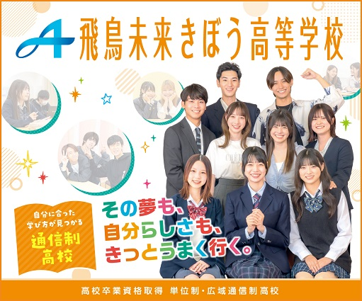
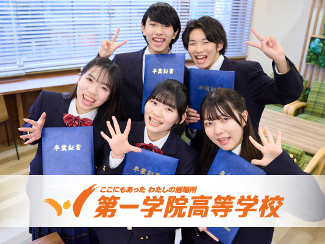
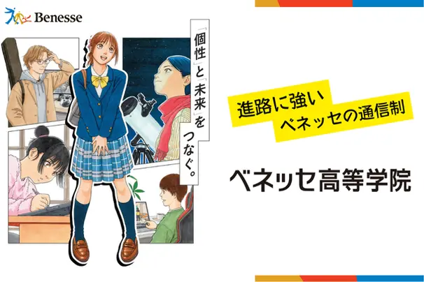

PR
通信制高校の学費はいくら？
2026年の無償化で何が変わるか

夏が過ぎ、進路を真剣に考える時期になりました。
お子様が通信制高校を選択肢に入れている、あるいはご家庭で話題に上がっている。
そんなときにまず気になるのが、学費のことではないでしょうか。
この記事では、通信制高校の学費が実際にいくらかかるのか、授業料以外にどんな費用が発生するのか、そして2026年度から拡大した無償化制度で何が変わるのかを、順にまとめました。
通信制高校の学費は、公立と私立で10倍以上違います
まず結論からお伝えします。通信制高校の学費は、公立か私立かで大きく変わります。
| 年間の目安 | 入学金 | |
|---|---|---|
| 公立 | 2〜6万円 | 約500円 |
| 私立 | 30〜65万円 | 数万〜20万円 |
※「年間の目安」は、授業料のほか教科書代・施設費などを含んだ金額です。何が含まれるかは学校によって異なります。入学金は初年度のみかかります。

2026年度から、無償化の対象が広がりました
ニュースでも取り上げられている高校の授業料無償化ですが、2026年度から内容が変わりました。通信制高校も対象です。
主な変更点は3つです。
- 2026年から、所得制限が撤廃されました。
- 私立通信制の支給上限額が増えました。年間33万7,200円が上限になります。
- 広域通信制高校も対象になりました。複数の都道府県から生徒を募集している学校のことで、これまで対象外でしたが、新たに含まれるようになりました。
所得制限が撤廃されたことで、世帯の収入によって支給を受けられないということはなくなりました。通信制を選ぶご家庭にとって、経済的なハードルは以前より下がっていると言えます。
※地域によって違うので詳しくは自治体の発信をご確認ください。また、就学支援金の支給のタイミングは入学後になります。

就学支援金の申請は「入学後」です。ここを間違えないでください
就学支援金は、自動的に適用されるものではありません。申請が必要です。
そして申請するのは入学後です。入学前に手続きをするものではありません。
- 4月入学の場合：入学後の4月中（学校が定める期日まで）に申請します。学校から案内があります。
- 転入の場合：転籍後2〜3か月後に案内があるのが一般的です。
- 在学中：受給資格の確認手続きがあります。時期や方法は学校から案内があります。
どこまでが支援の対象になるかは、学校やコースによって変わります。入学を検討している学校に、事前に確認しておくと安心です。

では、お子様の場合は結局いくらになるのか
ここまでの金額は、あくまで目安です。
ご家庭が実際に払う額は、次の3つで変わります。
- 私立は30〜65万円と幅が大きい：同じ「私立の通信制」でも、学校とコースによって倍近く違います。
- 支援金でいくら引かれるかは、履修する単位数と学校の授業料で変わる：上限は年33万7,200円ですが、支援金は授業料を超えては支給されません。履修する単位数によっても変わります。
- 授業料以外の費用は、学校ごとにまったく違う：スクーリングの交通費、教材費、施設設備費。これらは支援金の対象外です。
つまり、「うちの場合はいくらか」は、相場表では分かりません。
学校ごとの資料に書かれている金額を見比べるのが、いちばん確実です。
同じ「通信制」でも、学校によってまったく違います
通信制高校は全国に300校以上あります。
学費だけでなく、通い方も学べる内容も大きく違います。
たとえば、資料を請求できる学校にはこんな違いがあります。
通信制高校
N高等学校・S高等学校・R高等学校
- 全国に100ヶ所以上のキャンパスがあり、お住まいの地域を問わず選択肢に入ります
- ネットコースのほか、週5日・週3日・週1日＋のコースから選べます
- 在籍数は3万人を超えています
サポート校
トライ式高等学院
- 通信制高校・サポート校で全国No.1の大学進学率※在籍生徒数3,500名以上の通信制高校・サポート校において進学率全国1位。2023年3月23日 産経メディックス調べ。
- 体調に合わせて受講スタイルをいつでも変更できます

通信制高校
飛鳥未来きぼう高等学校（飛鳥未来高等学校・飛鳥未来きずな高等学校）
- 自分に合った通学スタイルが選べて、服装も自由
- 多彩な専門分野が学べて、自分の「好き」が見つかります
- 豊富な学校行事があります

通信制高校
第一学院高等学校
- 教育理念は「1／1（いちぶんのいち）の教育」
- 自分のペースで通える、安心できる高校生活
- 「成長実感型教育」を掲げています
通信制高校サポート校
おおぞら高校
- 「なりたい大人になるための学校。®」を掲げています
- 先生＝マイコーチ®が寄り添います
- 屋久島スクーリングがあります

サポート校
ベネッセ高等学院
- 通信教育大手ベネッセのノウハウを活かした指導
- クラス担任と「赤ペンメンター」のWサポート制度
- 総合型選抜に対応しています
どれが合うかは、お子様の状態とご家庭の事情によります。
そして学費も、この違いによって変わります。
気になる学校をひとつずつ調べて、それぞれに問い合わせていくのは、正直かなり大変です。
やりたいこと・通学の頻度・お住まいの地域から、条件に合う通信制高校を探して、
まとめて資料請求できるサービスがあります。
費用はかかりません。まずは何校か資料を取り寄せて、学費や通学スタイルを比べてみることから始めてみてください。
カンタン60秒無料で人気校の資料を一括請求する※資料請求後、学校から連絡が入る場合があります。気になる点は、その際に直接ご確認いただけます。
運営元について
ご紹介しているサービス「ズバット通信制高校比較」は、株式会社ウェブクルーが運営しています。
これまでに15万人以上が利用しています（※2023年4月現在）。
同社は、お客様から取得する個人情報を含むすべての情報について、情報セキュリティの国際規格「ISO27001（ISMS）」の認証を取得し、それに基づく管理を行っています。
お子様の進路にかかわる情報をお預けいただくことになるため、気になる方も多い点だと思い、記載させていただきました。
資料請求に費用はかかりません。